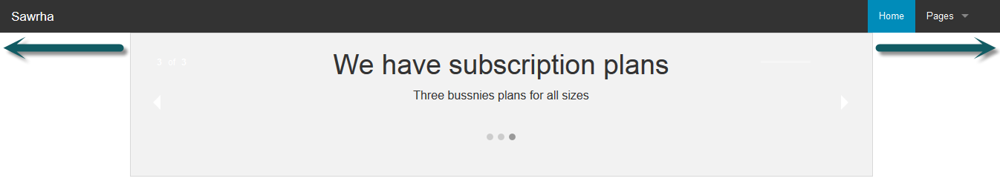
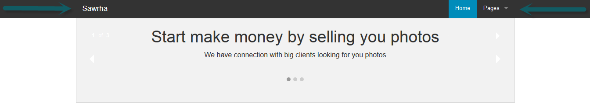
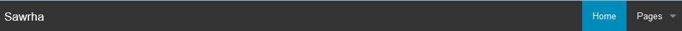
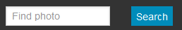
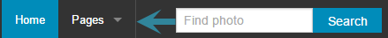
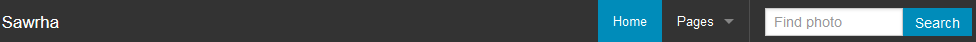
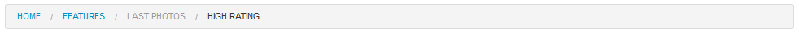

تعرفنا على النظام الشبكي في الجزء السابق والذي هو أساس وجوهر أيّ إطار عمل ولابدّ من التعامل معه بأريحية تامة فهو من المواضيع التي سوف تتعامل معها مع أيّ مشروع. في هذا الجزء سوف نتحدث عن نظام التنقل الخاص بإطار العمل Foundation، من خلال التعامل مع الشريط العلوي والشريط الجانبي والتبويبات وغيره من الإضافات التي يُقدمها Foundation لتسهيل عمل المطوّر.
الشريط العلوي من الأمور الأساسية في أي صفحة ويب، ولذلك سَهل Foundation إنشاءه، مستخدمًا JavaScript في ذلك، وجعله متجاوبًا وقدمه مع أصناف تُسهل عمل المطوّر.
يَستخدم Foundation الصنف top-bar مع خاصية المعلومات data-topbar للوسم <nav> لإنشاء الشريط، والصنف top-bar مسؤولٌ عن تحديدِ حجم وموقع الشريط أعلى الصفحة وإضافة خلفية سوداء له، ويتألف بناء الشريط العلوي من قائمة غير مُرتبة <ul> و قسم <section>، وتحتوي القائمة على عنصر خاص لعنوان الموقع والأصناف الخاصة بالشريط في الوضع المُصغر وهو toggle-topbar الذي يُخفي كلمة Menu في الوضع العادي وإظهارها في الوضع المُصغر، والصنف menu-icon وهو من أجل ما يُعرف برمز الهامبرغر (الخطوط الأفقية الثلاثة) في الوضع المُصغر، ولك حرية استخدامه أو حذفه.
أما القسم <section> ففيه يتم إنشاء القوائم الرئيسة والقوائم المُنسدلة، وله الصنف top-bar-section، والذي يُعطي عناوين القوائم اللون الأبيض، وتُنشئ القوائم عبر العنصر <ul>، ويُمكن التحكم بموضع القائمة بالصنفين right وleft، وللإشارة إلى الصفحة الحالية نستخدم الصنف active لعناصر القائمة <li>، ويُمكن أن تحتوي كل قائمة رئيسة قائمة مُنسدلة، وكل قائمة مُنسدلة قائمة منسدلة داخلية، ولإنشاء قائمة مُنسدلة نضيف الصنف has-dropdown إلى القائمة الرئيسة، وذلك من شأنه أن يضيف مثلثًا صغيرًا يشير إلى أنّ القائمة مُنسدلة، ولكل قائمة مُنسدلة سوف نُضيف لها الصنف dropdown الذي يقوم بإخفاء العناصر <li> من العرض وإظهارها عند المرور (hover) فقط، ويمكنك الفصل بين العناصر عن طريق الصنف divider.
يأخذ الشريط العلوي عرض المتصفح بالكامل بشكل افتراضي، ويُستخدم الصنف contain-to-grid لجعل عناصر الشريط العلوي متجانسةً مع النظام الشبكي، حيث العرض هو 1000 بكسل، والصنف fixed يُثبت الشريط العلوي أعلى الصفحة مهما تم التدرّج إلى أسفلها.
في متجرنا لدينا الشريط العلوي مُعرف كالتالي:
<div class="contain-to-grid fixed">
<nav class="top-bar" data-topbar role="navigation">
<ul class="title-area">
<li class="name">
<h1><a href="#">Sawrha</a></h1>
</li>
<li class="toggle-topbar menu-icon"><a href="#"><span>Menu</span></a></li>
</ul>
<section class="top-bar-section">
<ul class="right"> <!--القوائم يمين الصفحة-->
<li class="active"><a href="#">Home</a></li> <!--الصنف "نشطّ للإشارة إلى الصفحة الحالية-->
<li class="has-dropdown">
<a href="#">Pages</a>
<ul class="dropdown">
<li><a href="#">Regiseration</a></li>
<li><a href="#">Pricing</a></li>
<li><a href="#">Gallery</a></li>
</ul>
</li>
</ul>
</section>
</nav>
</div>
لاحظ أننا استخدمنا الصنف contain-to-grid لتسوية عناصر الشريط مع النظام الشبكي، والصنف fixed لتثبيت الشريط أعلى الصفحة بشكل دائم والفرق بين استخدام الصنف contain-to-grid وعدم استخدامه موضّح في الصور التالية.


الشريط كما سوف يظهر على الشاشات المتوسطة والكبيرة.

أما في الشاشات الصغيرة سيكون الشريط كالتالي:

يَسدل الشريط العلوي القوائم المُنسدلة عند المرور عليها (hover) بشكل افتراضي، وبإمكانك تغيير هذا السلوك عن طريق "خاصية المعلومات" data-options مُعطاةً القيمة "is_hover: false"، الذي سوف يجعل من القائمة تُنسدل بعد الضغط عليها.
يُتيح أيضًا الشريط العلوي إمكانية إضافة أزرار وعناصر إدخال <input> وذلك عبر الصنف has-form، ويُمكن الفصل بين العناصر باستخدام الصنف divider، ولإزالة الحشو (padding) بين المُدخل (input) والزر بإمكاننا استخدام الصنف collapse.
في متجر صوّرها سوف نضيف خانة بحث للصورة في الشريط العلوي.
<li class="divider"></li> <!-- فاصل بين القوائم وخانة البحث -->
<li class="has-form right"> <!-- عنصر قائمة لخانة البحث وعلى يمين الصفحة -->
<div class="row collapse"> <!-- لإزالة المسافة بين المُدخل والزر -->
<div class="large-8 small-9 columns">
<input type="text" placeholder="Find photo">
</div>
<div class="large-4 small-3 columns">
<a href="#" class="button expand">Search</a>
</div>
</div>
</li>
لاحظ المسافة بين الزر وخانة البحث في حال عدم استخدامنا للصنف collapse.

الفاصل بين القوائم.

مثال حي http://codepen.io/anon/pen/zxZXZw يُوضح المسافة بين الزر وخانة البحث.
الشريط العلوي بشكله النهائي سيكون كالتالي.

مثال حي http://codepen.io/anon/pen/OPWavB:
يُقدم Foundation الصنف side-nav لإنشاء "شريط تنقّل جانبي" باستخدام قائمة غير مرتبة (<ul>)، ويَستخدم Foundation هذا الشريط في التوثيق الرسمي الخاص به، ويُمكنك استخدام الصنف active للوسم<li> للإشارة إلى الصفحة الحالية، والصنف divider لعمل فاصل بين القوائم.
<h5>Categories</h5>
<ul class="side-nav">
<li><a href="#">Snow</a></li>
<li><a href="#">Green</a></li>
<li><a href="#">Sky</a></li>
<li><a href="#">Rainbow</a></li>
<li><a href="#">Misc</a></li>
</ul>

مثال حي http://codepen.io/anon/pen/azpPBE:
يُمكنك Foundation من إنشاء تبويبات أُفقية وعمودية، وهي عناصر تُساعدك على تنظيم وعرض أكثر من مُستند داخل حاوية واحدة والتبديل/التنقل فيما بينها، ولإنشاء تبويبات أفقية نستخدم عنصر قائمة وصف (<dl>) مع الصنف tabs والخاصية data-tab، ويُظهر الصنف vertical التبويبات بشكل عمودي، حيث أنها أفقية بشكل افتراضي. كما تدعم هذه التبويبات ميزة الربط العميق (deep linking)، والتي تُتيح لك إنشاء رابط لأحد التبويبات وتَدرّج (scroll) المتصفح إلى التبويب المُختار.
في صفحة المنتج الخاصة بمتجرنا، وبعد عرض الصورة المختارة سوف نعرض معلومات عن المُصور والتعليقات الخاصة بالصورة والتقييم الخاص بها باستخدام التبويبات الأفقية.
<div class="row">
<div class="large-12 columns">
<dl class="tabs" data-tab> <!--التبويبات سوف تكون أفقية لأننا لم نستخدم الصنف عمودي-->
<dd class="active"><a href="#panel1">Info</a></dd> <!--الصنف "نشط" للدلالة على أن هذا التبويب هو التبويب الحالي-->
<dd><a href="#panel2">Comments</a></dd> <!--ربط هذا التبويب مع المحتوى الموافق له -->
<dd><a href="#panel3">Rating</a></dd> <!--ربط هذا التبويب مع المحتوى الموافق له -->
</dl>
<div class="tabs-content"> <!--يحتوي هذا القسم جميع محتويات التبويبات الثلاثة -->
<div class="content active" id="panel1"> <!--التبويب الأول-->
<h2>About the photographer</h2>
<p>Mohamad Abras is the best photographer on earth.</p>
<p><a href="mailto:mohamad.abras@live.com">Email me</a></p>
<p class="hide-for-medium-up"><a href="tel:+33333333">Call me</a></p>
</div>
<div class="content" id="panel2"> <!--التبويب الثاني-->
<p>Wow! Its the best photo I have ever seen.</p>
</div>
<div class="content" id="panel3"> <!--التبويب الثالث-->
<p>Five star</p>
</div>
</div>
</div>
</div>

بإمكاننا تحسين النّص السابق بشكل أفضل من ذلك، حيث أنها الآن لا تسمح لك بإنشاء روابط عميقة للتبويبات، أي أنك لا تستطيع إنشاء رابط مُباشر للتعليقات الخاصة بالصورة مثلًا، والتبويب Info هو الذي سيُعرض دائمًا بعد تحميل الصفحة، ولكن بعد إضافة خاصية المعلومات data-options والقيمة "deep_linking:true"، ستتمكن من إنشاء رابط مُباشر لأحد التبويبات وفي حال كان هذا التبويب أسفل الصفحة سيقوم المتصفح بالتدرّج (scroll) إلى التبويب المُختار.
<dl class="tabs" data-tab data-options="deep_linking:true">
مثال حي http://codepen.io/anon/pen/jEyXyq:
يُقدم Foundation "التبويبات القابلة للطي" (accordions) وهي تُشبه التبويبات التقليديّة (tabs)، ولكن الاختلاف بينها هو على مُستوى تجربة المُستخدم User Experience، حيث أن محتويات التبويب القابل للطيّ يجب أن تكون ضئيلة الحجم ولا تستدعي من المُستخدم النزول والصعود في المتصفح (scroll down/up) على عكس التبويبات التقليدية التي من المُمكن أن يكون المحتوى الخاص بها على طول الصفحة دون التأثير على تجربة المُستخدم، أيضًا التبويبات القابلة للطيّ مناسبة جدًا للشاشات الصغيرة وبطبيعة الحال أجهزة الهاتف المحمول، يُمكن قراءة المزيد عن الفروقات هنا .يَستخدم Foundation في اعداد هذه التبويبات الصنف accordion وخاصية المعلومات data-accordion مع قائمة غير مرتبة (<ul>)، والصنف accordion-navigation لكل عنصر من عناصر القائمة (<li>).
<dl class="accordion" data-accordion>
<dd class="accordion-navigation">
<a href="#panel1b">Accordion 1</a>
<div id="panel1b" class="content active">
...
</div>
</dd>
<dd class="accordion-navigation">
<a href="#panel2b">Accordion 2</a>
<div id="panel2b" class="content">
...
</div>
</dd>
<dd class="accordion-navigation">
<a href="#panel3b">Accordion 3</a>
<div id="panel3b" class="content">
...
</div>
</dd>
</dl>
مثال حي http://codepen.io/anon/pen/ogZbyQ:
يُستخدم "مسار التنقل" (breadcrumbs) كثيرًا في أنظمة إدارة المُحتوى مثل WordPress، وخاصةً عندما يكون تسلسل الصفحات طويلًا ومتشعبًا، ويُقدم Foundation الصنف breadcrumbs والذي يُضاف إلى قائمة غير مرتبة (<ul>) والصنفين current وunavailable لتحديد حالة عناصر القائمة. كما يُتيح Foundation إضافة الصنف breadcrumbs إلى العنصر nav أيضًا.
<ul class="breadcrumbs">
<li><a href="#">Home</a></li>
<li><a href="#">Features</a></li>
<li class="unavailable"><a href="#">Last Photos</a></li> <!-- الصنف "غير مُتوفر للإشارة إلى أن المسار غير مُتوفر -->
<li class="current"><a href="#">High Rating</a></li> <!-- الصنف "الحالي" للإشارة إلى المسار الحالي -->
</ul>
سوف نحصل على نفس النتيجة في حال استخدامنا الوسم <nav>
<nav class="breadcrumbs">
<a href="#">Home</a>
<a href="#">Features</a>
<a class="unavailable" href="#">Last Photos</a>
<a class="current" href="#">High Rating</a>
</nav>

يُستخدم "شريط التنقل الفرعي" بشكل شائع مع تصفية مُحتوى، ويُنشئ باستخدام الصنف sub-nav مُضافًا إلى "قائمة وصف" (<dl>)، والصنف active للدلالة على الاختيار الحالي.
في متجرنا وفي صفحة المعرض لدينا عرض لجميع الصور المُتوفرة في المتجر، مانريده هو "شريط تنقل فرعي" لاستخدامه لتصفية الصور بناءً على المُميز منها أو الجديد وبطبيعة الحال كل الصور.
<div class="row">
<div class="large-12 columns">
<dl class="sub-nav">
<dt>Filter:</dt>
<dd><a href="#">All</a></dd>
<dd><a href="#">New</a></dd>
<dd class="active"><a href="#">Feature</a></dd>
</dl>
</div>
</div>

يُستخدم "ترقيم الصفحات" (pagination) بشكل شائع على الرغم من انتشار تقنية AJAX والتحميل التلقائي، ويُقدم Foundation الصنف pagination للعنصر <ul> والصنف unavailable لإزالة تأثير المرور (hover) لعناصر القائمة <li> وجعلِها غير قابلة للنقر (unclickable)، أمّا الصنف pagination-centered فهو يُظهر "ترقيم الصفحات" في منتصف الصفحة.
بإمكاننا استخدام "ترقيم الصفحات" مع صور المعرض الخاصة بالمتجر وذلك من أجل استكشافها جميعًا.
<div class="row">
<div class="pagination-centered"> <!-- ترقيم الصفحات في المُنتصف -->
<ul class="pagination">
<li class="arrow unavailable"><a href="">«</a></li>
<li class="current"><a href="">1</a></li> <!-- الصفحة الأولى هي الصفحة الحالية -->
<li><a href="">2</a></li>
<li><a href="">3</a></li>
<li><a href="">4</a></li>
<li class="unavailable"><a href="">…</a></li>
<li><a href="">12</a></li>
<li><a href="">13</a></li>
<li class="arrow"><a href="">»</a></li>
</ul>
</div>
</div>

مثال حي http://codepen.io/anon/pen/wBJdRr:
وصلنا إلى نهاية الجزء الثالث والذي تعرفنا من خلاله على نظام التنقل الخاص بـFoundation، وذلك من خلال التعرف على الشريط العلوي والقوائم المُنسدلة، وشريط التنقل الفرعي والجانبي والتبويبات ومسار التنقل وأخيرًا ترقيم الصفحات، وفي الجزء الرابع من السلسلة سوف نتعرف على الأزرار والنماذج.